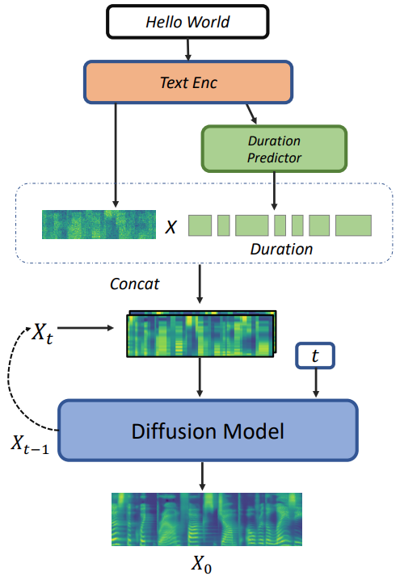
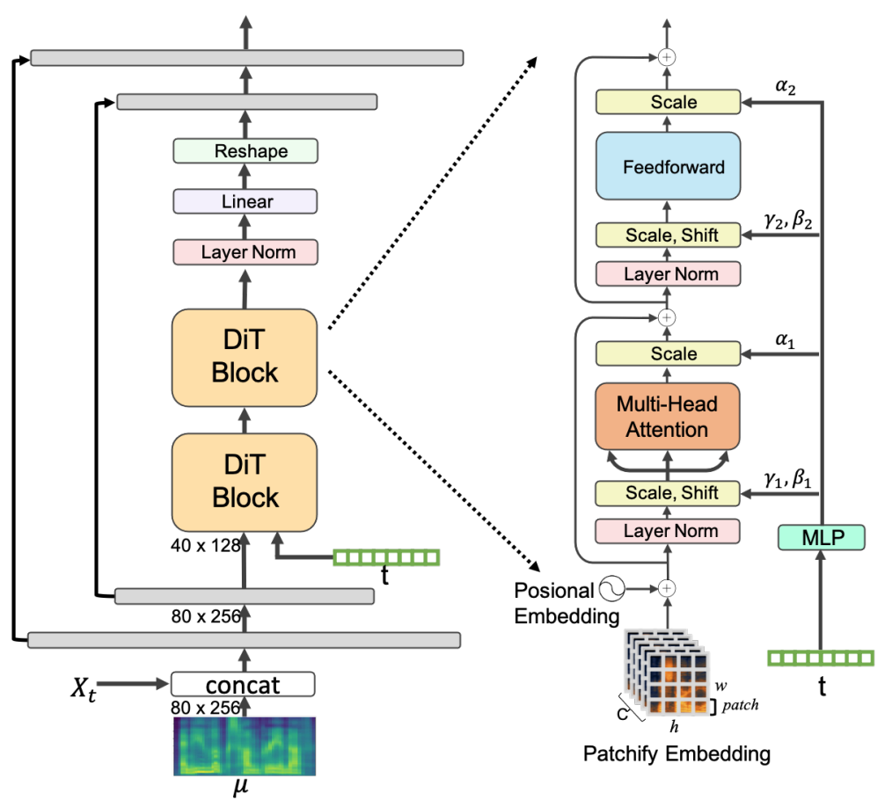

Recently, the adoption of Score-based Generative Models (SGMs), literally Diffusion Probabilistic Models (DPMs), has gained traction due to their ability to produce high-quality synthesized neural speech in neural synthesis systems. In SGMs, the U-Net architecture and its variants have long dominated as the backbone since its first successful adoption. In this research, we propose the U-DiT architecture, exploring the potential of vision transformer architecture as the core component of the diffusion models in a TTS system. The proposed U-DiT TTS system, inherited from the best parts of U-Net and ViT, allows for great scalability and versatility across different data scales and utilizes a pretrained HiFi-GAN as the vocoder. The objective (ie Frechet distance) and MOS results demonstrate that our U-DiT TTS system achieves competitive performance on the single-speaker dataset LJSpeech. Our demos are publicly available at: https://eihw.github.io/u-dit-tts/


framework
udit
TTS Samples
1. The poorer prisoners were not in abject want, as in other prisons,
Ground Truth
Ground Truth mel
U-DiT
Grad-TTS
2. In eighteen fifty-five
Ground Truth
Ground Truth mel
U-DiT
Grad-TTS
3. seems necessary to produce the same result of justice and right conduct